Create / edit a Profile
Select a profile in the profile library and choose Edit to modify the profile. The profile opens in the profile editor with the important dimensions displayed, as follows:
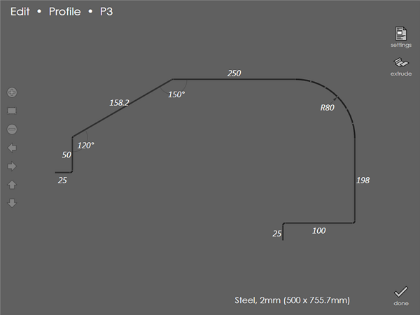
All segment lengths are dimensioned; angles which are not 90 degrees are also dimensioned. If a corner uses a large radius (to be done as a step bend), the inner radius is also displayed as a dimension. For example, see the R80 dimension at the top right of the profile above.
Typing in new dimensions
Tap any of the displayed dimensions and type in a new value directly. Then, press Enter to reshape the profile. If length value is entered out of range, an appropriate warning message appears. Here is the same profile as above, keying in some new dimensions. Similarly, if the angle entered is not within the range, a warning message is displayed.
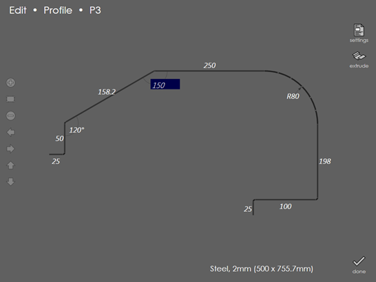
Editing length dimensions
When you tap on a length dimension to edit it, you will notice that a dimension line indicating the exact location the dimension is referred to, is displayed. The dimension arrows also serve another purpose; by tapping on one of the displayed dimension arrows, you can change the dimension from an outer dimension to an inner dimension or vice versa. For example, here is a profile showing a 100 mm outer dimension:
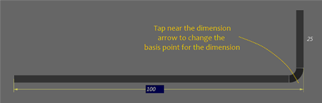
Upon tapping near the arrow on the right, the dimension leader line is redrawn and the dimension within the input box is updated as well:
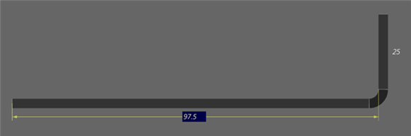
If the corner is an acute angled corner, there are three different dimensioning methods, which you can cycle through by tapping on the arrow. The picture below shows all three dimensioning styles in action.
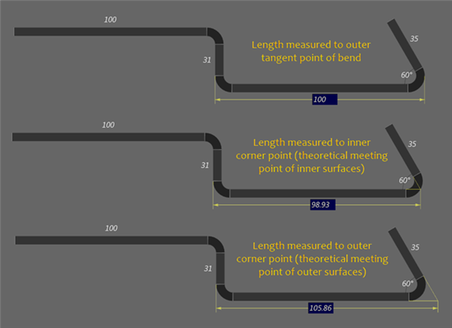
For the second and third style, the dimension reference point is a theoretical sharp point, which does not actually appear on the profile. To assist you in visualizing this point, construction lines are drawn in yellow as seen in the pictures above. Upon cycling through these styles by tapping on the dimension arrow, the actual measurement value also updates.
large bend radius
For large-radius bends, you can set the dimension to the outer tangent point, or to the start of the bent section:
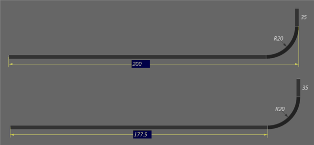
Summary:
While working with linear dimensions, it is possible to choose between various dimension basis points (on the inner surface, outer surface, the bending section tangent etc). You switch between these by tapping on the dimension line arrow. Note that just tapping on the arrow does not change the shape of the profile; it just re-dimensions them using a different basis. An appropriate length value can later be typed in to change the profile’s shape.
Editing a 90-degree corner
For 90-degree corners, the angle measurement is not displayed. However, just tapping on the corner displays an edit box with the text 90. Type in a different measurement to change the corner angle. The picture below shows this text box being displayed:
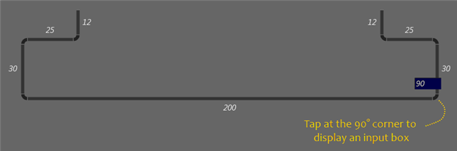
Editing the base segment length
Each profile being edited has a base segment; this is the horizontal segment near the center of the profile. The base segment of a profile is special; it acts like the anchor for the profile and you cannot change it to any angle other than horizontal. You can change the base segment’s length by touching one of its endpoints and dragging left or right; the figure below shows the locations where it is possible to touch and drag to change the base segment length for a profile:
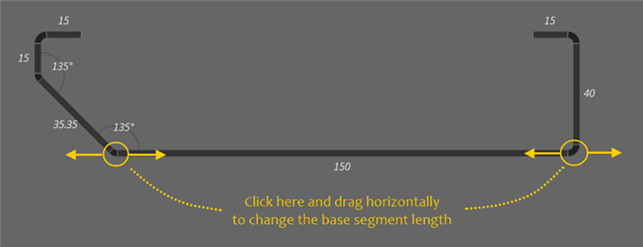
Editing the length of any other segment
The length of any other segment can be edited by clicking on the free end of that segment and dragging the same. The free end of any segment is the end that is further away from the base.
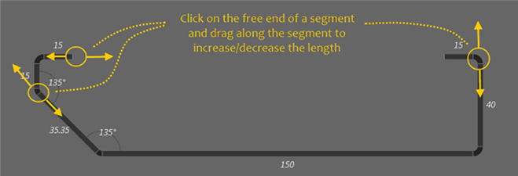
As the segment is dragged, the length dimension of the segment gets updated continuously, so an immediate feedback on the actual length setting at the segment is achieved.
Changing a corner angle
To edit a corner angle, click on the free end of a segment and drag it sideways; this changes the angle at the start of the segment. The example below helps us understand how this works. As the segment is dragged to change the angle, the interior angle snaps to some common angles (like 45, 60, 90 and so on). In case of a non-standard angle, drag to set an approximate angle, and then tap on the angle display and type in the exact value.
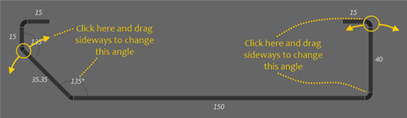
|
Note
|
The end of the segment closer to the base segment is fixed; the other end moves when you drag it. |
|
Note
|
You can change both the length and angle of a segment at the same time; dragging sideways changes the angle, while dragging along the segment changes the length. |
Creating a hemming fold
A hem can be created by dragging a segment sideways until it folds back on the adjacent segment. If the interior angle closes below 30 degrees, the segment snaps to become a hem:
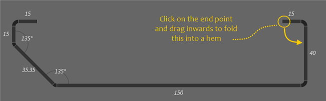
Below is the hem created.
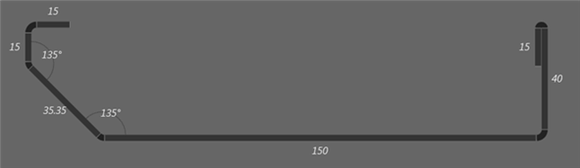
A hem can be created on the other side by dragging your finger slightly to the outside of the flange before releasing it:
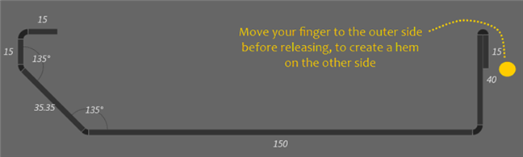
Adding new segments to a profile
A new flange can be added to the profile at either of the free ends of the profile. To do this, click a small distance away from either of the free ends. If clicked too close to the free end, the segment also will be dragged along resulting in changing its length or angle. Touch about a centimetre or two away from the free end and start dragging to add a new segment to the profile:
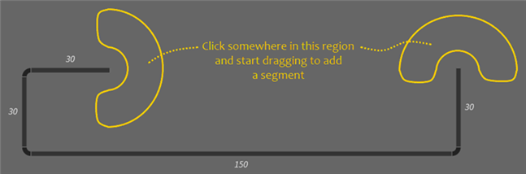
Deleting a segment
A segment can be deleted in one of two ways: Tap on the segment length. It becomes editable. Type in 0 and press Enter; the segment gets deleted. Click on the free end of the segment and drag it toward the other end, shortening the segment. If it is dragged close enough, the segment disappears when you lift your finger (Without lifting, you can continue dragging and the segment will re-appear once you move a bit further away from the fixed end).
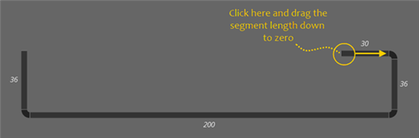
|
Note
|
The base segment of a profile cannot be deleted. |
Converting a corner to a large-radius bend
A normal corner can be converted into a large radius bend (i.e., step bend). To do this, click a small distance away from the outer side of the corner, and drag inwards (If clicked too close to the corner, the segment also will be dragged along resulting in changing its length or angle).
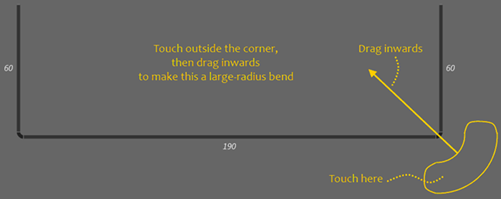
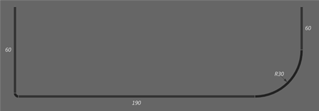
To fine-tune the radius, tap on the radius measurement which brings up the Edit Step Bend dialog as shown below:
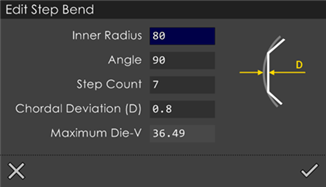
Use this dialog to tune the Inner Radius, Angle, Step Count and Chordal Deviation (D) values.
Converting a large-radius bend back to a corner
A large radius bend can be converted back to a simple-bend corner by performing the reverse process. Touch near the radius marker, and drag outwards:
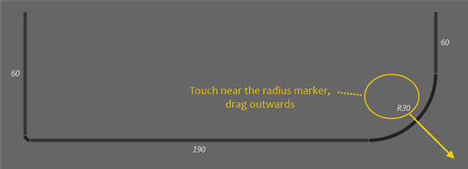
Settings:
Use this command to modify the settings like Material, Thickness, Punch, Die, Punch holder, Die holder etc. See the Part Settings section for more details.
Extrude:
Touch this button and enter the Extrusion value in the Part Settings dialog that comes up to create the extrusion. Once the profile creation or editing is completed, press the Done button. If changes have been made to an existing profile or a new profile has been created a prompt like the one below is displayed:
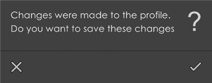
You can either to choose to save changes by pressing [check] or discard all the changes made by pressing [close].